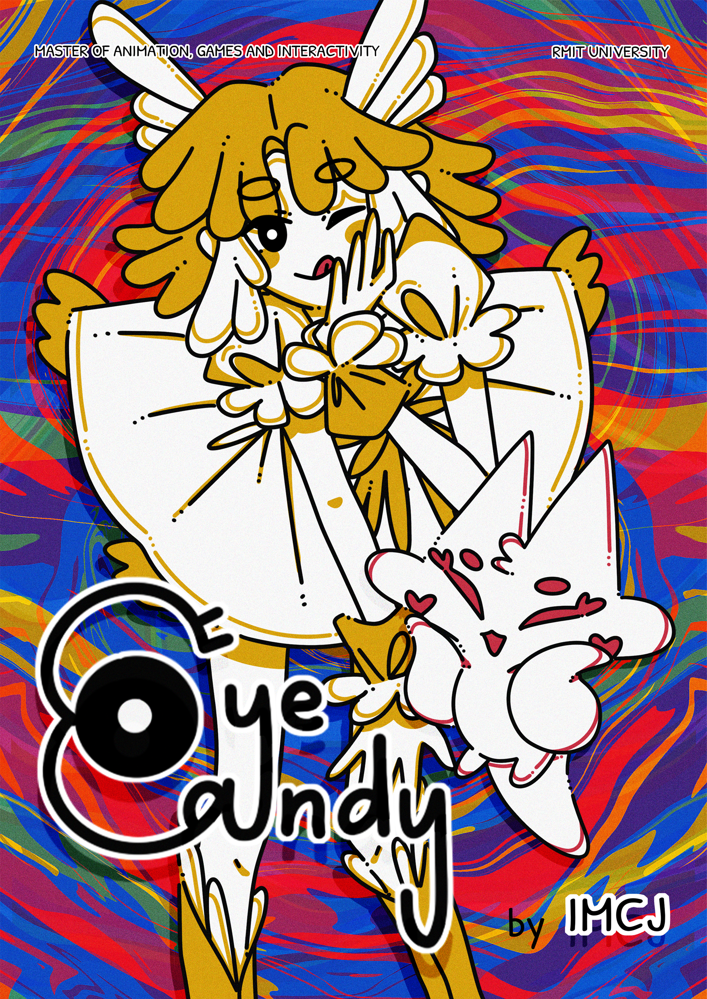

PROJECT / 01
Eye Candy
PROJECT DESCRIPTION
This is a narrative-driven visual novel with turn-based combat that explores cognitive bias, perception, and manipulation through the lens of a seemingly cute magical girl adventure.
Eye Candy takes place in a colorful world following Melus, a magical girl partnered with a cute floating companion - also is an alchemist named Ipulus. However, beneath the cheerful presentation lies another reality. As the story progresses, players can discover that their understanding of the world may be built on false assumptions and hallucinations. The project uses player perception itself as part of the gameplay experience, encouraging players to question what they believe to be true.
